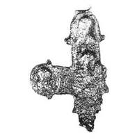

Catalog › CE-0669 · KOR2003-II.1.1.48
Valvă de revers fragmentară de encolpion, ușor deformată, cu imagini în relief netezite
sec. sfârșit XII (1101–1200) · Kiev (Podol), Ucraina · Muzeul de Istorie a orașului Kiev (MIK), inv. А-193
single valve of a reliquary cross, aramă; c. sfârșit XII (1101–1200); found at Kiev (Podol), Ucraina; kept at Muzeul de Istorie a orașului Kiev (MIK).


Identificare
- Categorie
- Valvă izolată
- Material
- Aramă
- Tehnică
- Turnare în relief
- Stare
- Fragmentară
- Dimensiuni
- Î 70 × L 49 mm
Iconografie
- Descriere revers
- Valvă de revers fragmentară (capătul drept și parțial cel de jos rupte), ușor deformată. Imagini în relief netezite.
Datare și atribuire
- Datare
- sec. sfârșit XII (1101–1200)
- Centru
- Necunoscut
- Tipologie
- Korzukhina–Peskova 2003, tip II 1 1
Descoperire
- Localitate
- Kiev (Podol)
- Țară
- Ucraina
- Context
- Așezare
- Anul
- 1975
Păstrare și referințe
- Colecție
- Muzeul de Istorie a orașului Kiev (MIK)
- Nr. inventar
- А-193
- Bibliografie
- G. F. Korzukhina, A. A. Peskova, Древнерусские энколпионы. Нагрудные кресты-реликварии XI–XIII вв., Sankt-Petersburg, 2003 [Korzukhina–Peskova 2003], p. 67, cat. nr. II 1 1/48, reprodusă la Табл. 19 (planșe, p. 261). Bibliografie citată în sursă: Гупало, Іваків, Сагайдак 1979, 62, рис. 19; Гупало 1981, 311, рис. 136г; Зоценко 1981, рис. 2; Пекарська, Пуцко 1989, 85–86, рис. 1, 5.
- Figura
- Табл. 19
- Planșe
- Korzukhina–Peskova 2003, Табл. 19 (planșă fără paginație proprie în PDF; p. 261 tipărită)
- Observații
- Datare după Peskova: sec. sfârșit XII. Circumstanțe: Săpături M. A. Sagaidak, 1975, lângă Biserica Pokrovskaia, Podol. Dimensiuni: fragment. Coordonate: nu sunt date în sursă.
Citare: Corpus Encolpiorum, CE-0669, Valvă de revers fragmentară de encolpion, ușor deformată, cu imagini în relief netezite, --root/piese/KOR2003-II.1.1.48/ (accesat 2026-10-17).